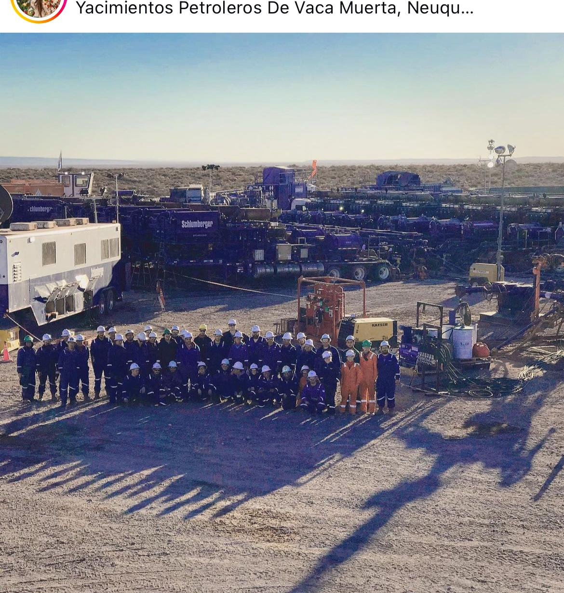
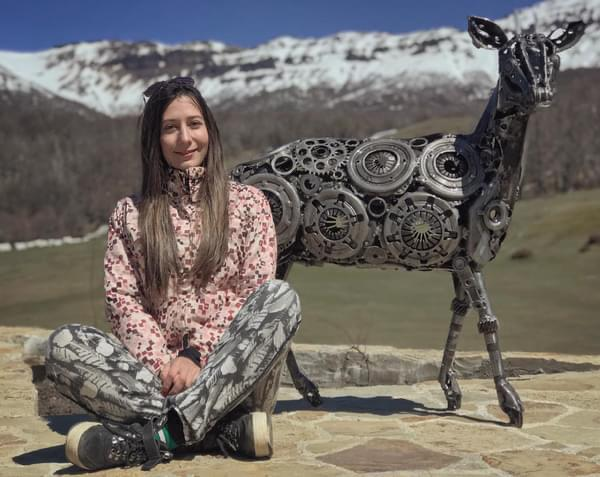
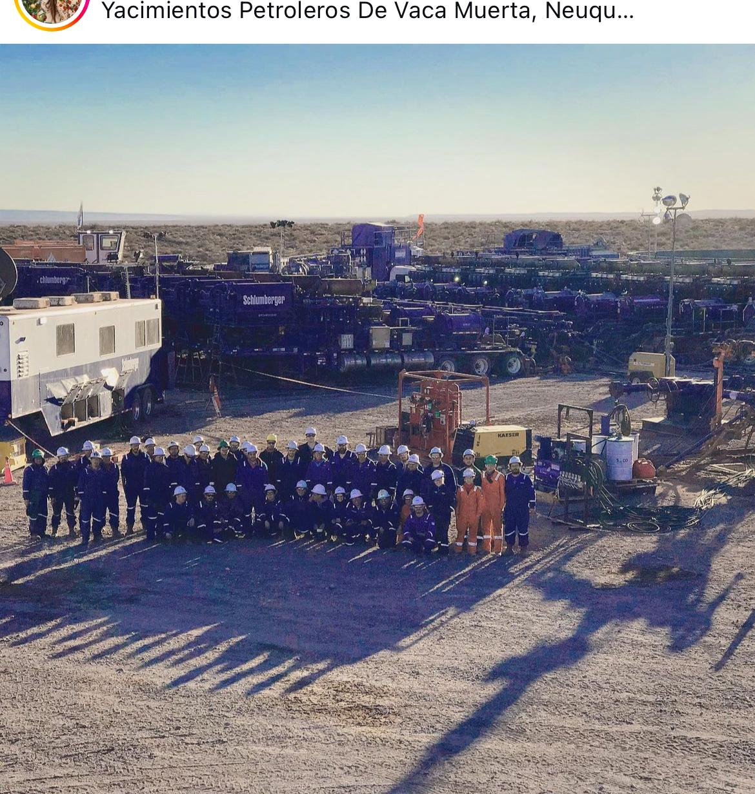
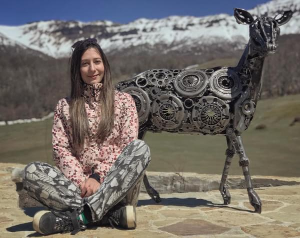
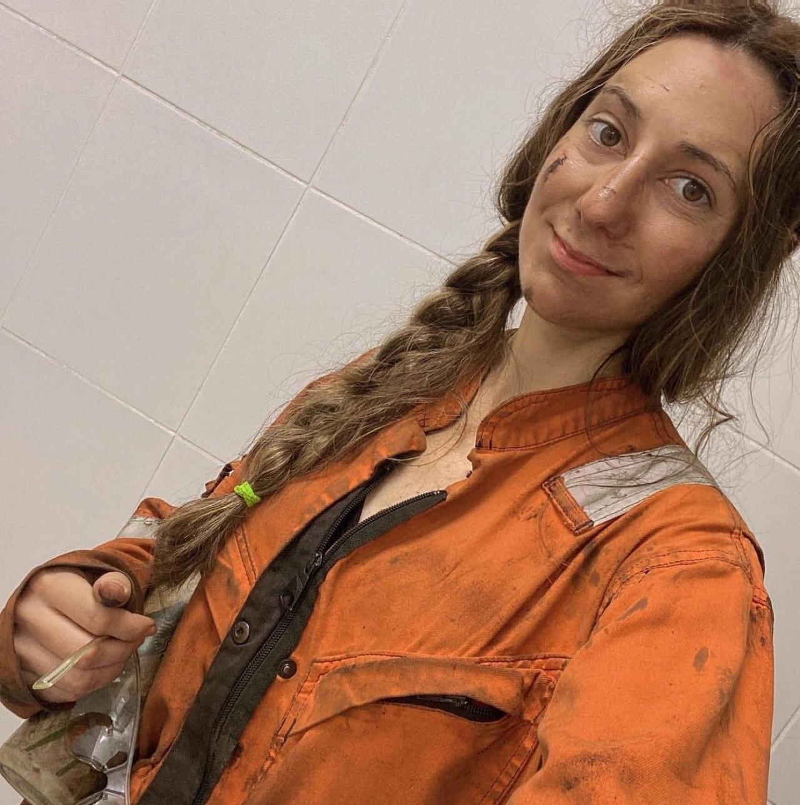
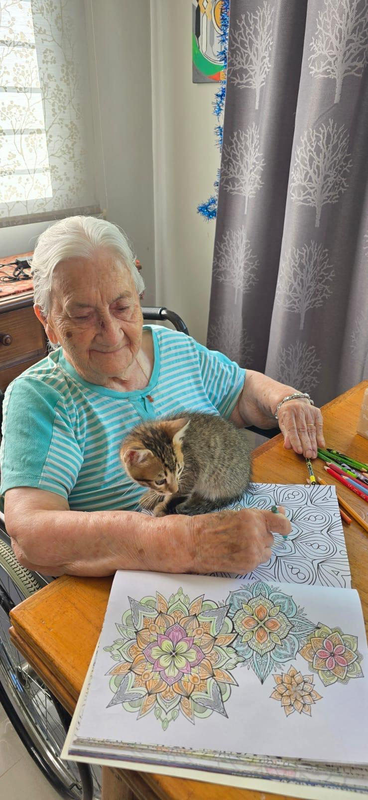
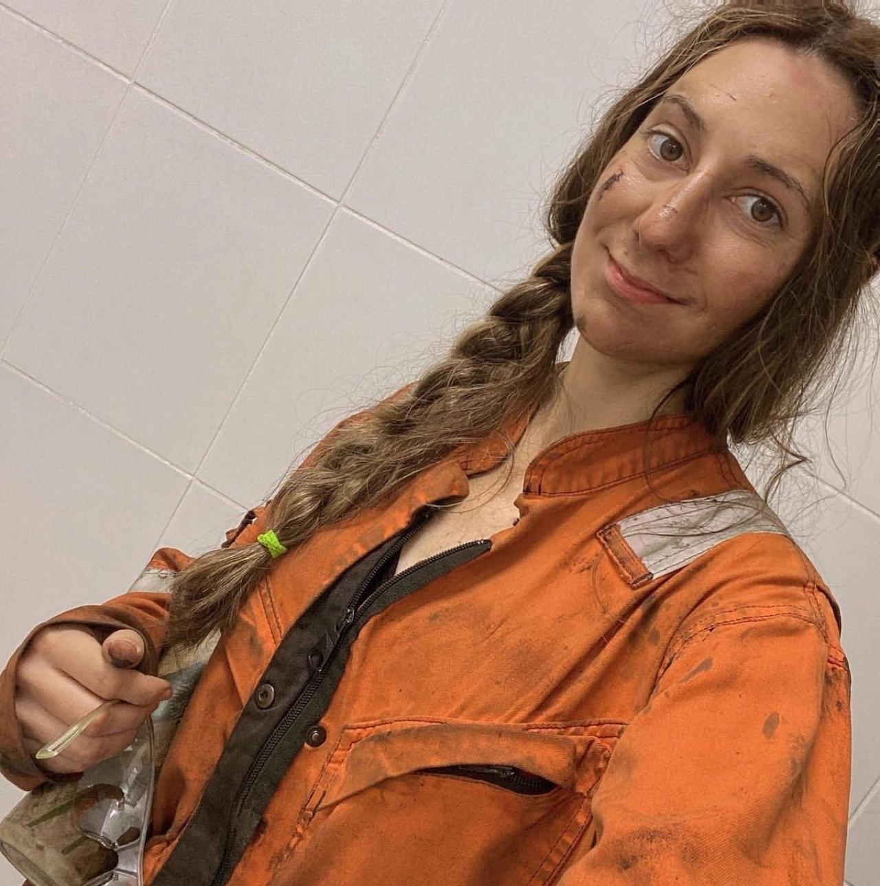
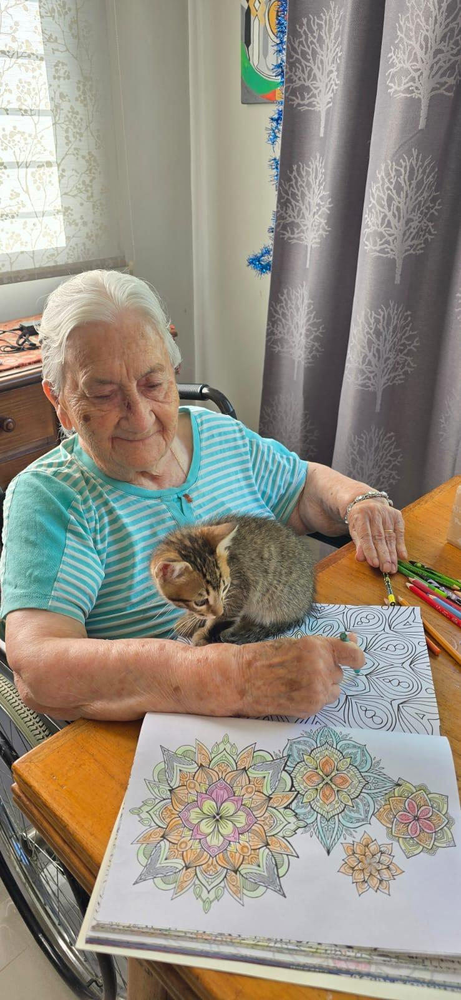

🌸 Primera Parte: Presentación 🌸

🩵 Nombre y Apellido: Sofía Laura Figueroa
💙 Edad y Profesión: 31 años - Desempleada
💜 Apodo: CHOFA
🌺 Segunda Parte: Biografía 🌺
📖 MINI BIOGRAFÍA 📖
¡Hola! Soy graduada en Neuquén como Técnica Superior en Petróleo. Mi carrera me gustó mucho y me recibí con honores. También tengo un background en Informática.
Trabajé en Parque Industrial (Neuquén) y en Vaca Muerta (Añelo) por 5 años. También operé en Plataformas marinas por 4 años, en mi más reciente experiencia laboral.
Me encantan las mascotas, soy fan de los gatos, tengo 3 y una perra. Mis gatos son Micho, Elliot y Moth. Coca es la perrita. 🐱 🐈 🐈⬛ + 🐶
Actualmente vivo con mi Mamá, mi Papá y mi Abuela de 97 años. Los quiero mucho a todos 💖.
Mis momentos favoritos: algunas fotos que me representan, viajes, experiencias o cosas que me hacen feliz ✨ 🌺 💜
 



 



Un videito de música
Mi objetivo es completar este curso, adquirir nuevos conocimientos y generar herramientas que puedan brindarme un futuro laboral con más oportunidades.
Además, me gusta mucho la programación y el diseño web y permite expresar mi creatividad y resolución de problemas. También resolver necesidades específicas de la gente.
¡Muchas gracias por su tiempo de lectura !
Atentamente, con cariño ♥ , Sofi.